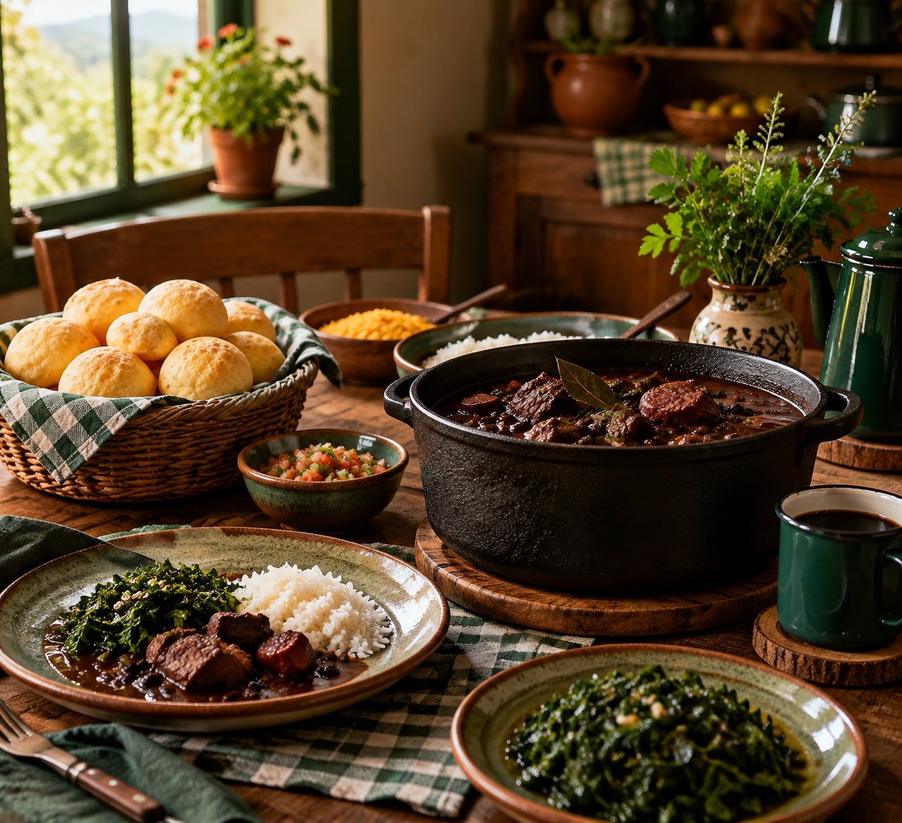
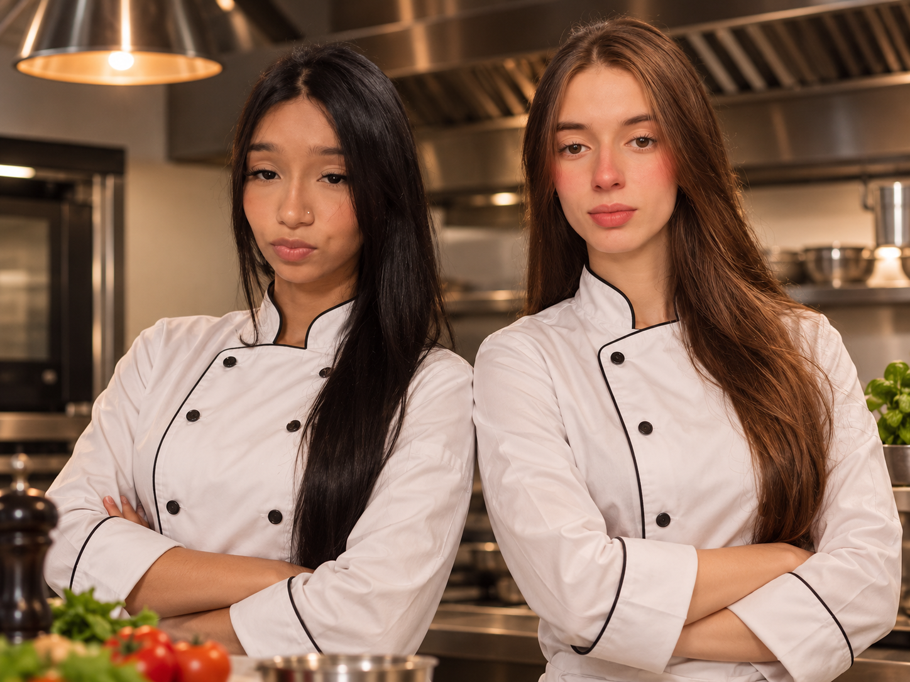

Receita de família
Tutu, frango com quiabo, tropeiro: cada prato vem de caderno de receita, com o jeito e o tempero de sempre.
O Sabores da Casa somos eu e meu grupo de amigas, daquele jeito que a gente aprendeu na cozinha de casa: panela de ferro, fogo baixo e tempo para o tempero entrar. Aqui nada é feito de véspera nem de pressa.
A gente escolhe os ingredientes, cozinha no dia e serve do jeito que serviria na mesa de casa. É comida mineira de verdade a que abraça.

Tutu, frango com quiabo, tropeiro: cada prato vem de caderno de receita, com o jeito e o tempero de sempre.
Feijão, couve, quiabo e queijo escolhidos na hora. O que não está bom não entra na panela.
Cozinha aberta no horário do pedido, sem comida esperando na bandeja. Sai quentinho, do jeito que tem que ser.


Não tem cardápio gigante nem cozinha industrial. Tem panela pequena, fogão aceso e o cuidado de quem faz comida para quem gosta: cada prato passa pelo nosso time do começo ao fim, da escolha do ingrediente até a hora de servir.
Se você quiser saber o que está saindo hoje, é só chamar no Instagram a gente conta antes de você pedir.
Somos eu e meu grupo: as chefes cuidam do tempero e do ponto de cada prato, e as cozinheiras fazem a comida sair quentinha, todo dia.

Segunda a sexta das 10h às 20h, sábado e domingo das 11h30 às 22h30.